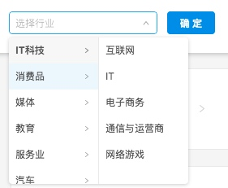

功能
将无序的[Object Array]类型转化为级联选择（Cascader）的数组
数据结构
const a = [{
id: 1000,
value: 'IT-123'
}, {
id: 1001,
value: 'IT-456'
}, {
id: 1002,
value: 'IT-789'
}, {
id: 1003,
value: 'EC-000'
}, {
id: 1005,
value: 'EC-111'
}, {
id: 1006,
value: 'EC111',
}];
原理
通过寻找数组的相同点，构造哈希匹配来实现，减少复杂度和寻址效率。
const b = {};
for (let i = 0; i < a.length; i++) {
const id = a[i].value.split('-');
if (!b[id[0]]) b[id[0]] = [];
b[id[0]].push({
value: id[1] || id[0],
label: a[i].id,
});;
}
const cascader = Object.keys(b).map(item => ({
label: item,
value: item,
children: b[item],
}));
console.log(cascader);
Screenshot
